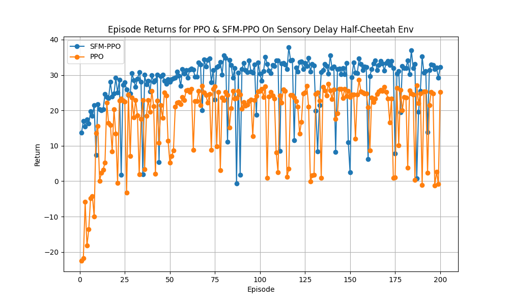

Current Progress¶
SFM-PPO & SoFM-PPO Control Demos¶
SFM-PPO is a vriant of PPO where an Supervised Forward Model (SFM) is added to understand the dynamics of teh environment amd SoFM-PPO is a variant of PPO (Sub-Optimal Forward Model) as well where instead of just the SFM, the model is also trained to find "local minimum" or sub-optimal minimum in one task in order for completions in more than just one task. The below are a few Deep-RL Half Cheetah agent demos:
Trained using PPO on "Jump Task" and stuck on weird local minimum
Trained using SFM-PPO on "Normal Running Task"
Trained using SoFM-PPO on "Normal Running Task" but with world model intention bounding
Latent Created Example¶
Demonstartion of latent representation of agent during task
Deep-RL SoFM-PPO Half Cheetah agent trained and visualize with PCA
Performance in Sensory Delayed Environment¶
Simple testing in mimicing delayed sensory environment like in real life. Trained with a transfered core.

Deep-RL SoFM-PPO Half Cheetah agent evaluated on sensory delayed environment